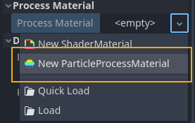
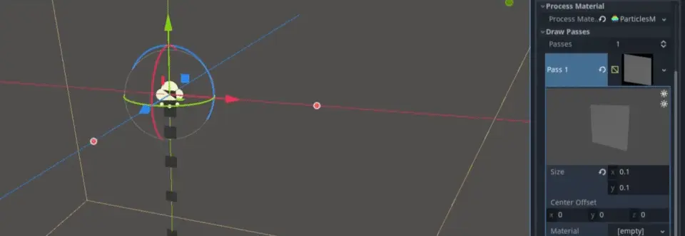
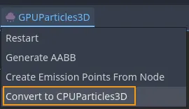

Tạo hệ thống hạt 3D

Các thuộc tính bắt buộc của node hạt
Để bắt đầu với hạt, việc đầu tiên cần làm là thêm một node GPUParticles3D vào scene. Trước khi thật sự thấy được hạt nào, chúng ta phải thiết lập hai tham số trên node: Process Material và ít nhất một Draw Pass.
Process material
Để thêm process material cho node hạt, hãy vào Process Material trong bảng Inspector. Nhấn vào ô bên cạnh Process Material và chọn New ParticleProcessMaterial từ menu thả xuống.

Tạo process material
class_ParticleProcessMaterial là một loại material đặc biệt. Chúng ta không dùng nó để vẽ đối tượng nào. Thay vào đó, chúng ta dùng nó để cập nhật dữ liệu và hành vi của hạt trên GPU thay vì CPU, nhờ đó tăng hiệu năng đáng kể. Nhấn vào material vừa thêm sẽ hiển thị một danh sách dài các thuộc tính mà bạn có thể đặt để điều khiển hành vi của từng hạt.
Draw pass

Cần ít nhất một draw pass
Để kết xuất hạt, cần định nghĩa ít nhất một draw pass. Để làm vậy, hãy vào Draw Passes trong bảng Inspector. Nhấn vào ô bên cạnh Pass 1 và chọn New QuadMesh từ menu thả xuống. Sau đó, nhấn vào mesh và đặt Size của nó thành 0.1 cho cả x và y. Giảm kích thước mesh giúp bạn dễ phân biệt các mesh hạt riêng lẻ hơn ở bước này.
Bạn có thể dùng tối đa 4 draw pass cho mỗi hệ thống hạt. Mỗi pass có thể kết xuất một mesh khác nhau với material riêng. Mọi draw pass đều dùng dữ liệu được tính bởi process material, đây là một cách hiệu quả để kết hợp các hiệu ứng phức tạp: tính hành vi của hạt một lần và đưa nó vào nhiều render pass.

Dùng nhiều draw pass: hình chữ nhật màu vàng (pass1) và hình cầu màu xanh (pass 2)
Nếu bạn đã làm theo các bước trên, hệ thống hạt của bạn giờ sẽ phát hạt theo kiểu thác nước, khiến chúng di chuyển xuống dưới và biến mất sau vài giây. Đây là nền tảng cho mọi hiệu ứng hạt. Hãy xem tài liệu về các thuộc tính hạt và particle material để tìm hiểu cách làm hiệu ứng hạt thú vị hơn.

Chuyển đổi hạt

Chuyển hạt GPU thành hạt CPU
Bạn có thể chuyển hạt GPU thành hạt CPU bất cứ lúc nào bằng mục tương ứng trong menu của viewport. Khi làm vậy, hãy lưu ý rằng không phải mọi tính năng của hạt GPU đều có cho hạt CPU, vì vậy hệ thống hạt sau khi chuyển sẽ trông và hoạt động khác với bản gốc.
Bạn cũng có thể chuyển hạt CPU thành hạt GPU nếu không còn cần dùng hạt CPU nữa. Việc này cũng được thực hiện từ menu của viewport.
Một số tính năng đáng chú ý nhất bị mất khi chuyển đổi gồm:
nhiều draw pass
nhiễu động (turbulence)
sub-emitter
vệt (trail)
attractor
va chạm
Bạn cũng mất các thuộc tính sau:
Amount RatioInterp to EndDamping as FrictionEmission Shape OffsetEmission Shape ScaleInherit Velocity RatioVelocity PivotDirectional VelocityRadial VelocityVelocity LimitScale Over Velocity
Việc chuyển hạt GPU thành hạt CPU có thể trở nên cần thiết khi bạn muốn phát hành game trên các thiết bị cũ không hỗ trợ các API đồ họa hiện đại.